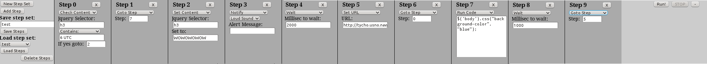

BrowserBot
This is the documentation page for the BrowserBot GreaseMonkey script. A fair warning: BrowserBot requires you to know a little about HTML and some features require that you know JavaScript. This guide will only cover the very basics on how to use BrowserBot. Sorry about this being bad documentation. I don't really expect anyone to want to use this who cant kind of figure it out on their own.
Definitions
Step Set: It holds all your programmed steps for the browser to follow.
Step: This is something your browser will do for you.
On the left side, you can name your step set and save it under that name. You can also add steps from the left side. There are 10 different steps:
- Check Content
- Goto Step
- Set Content
- Set URL
- Wait
- Trigger Event
- Notify
- GV SMS
- Run Code
- Stop
Everytime you see "Jquery Selector" it's talking about the element on the page you want to look at. Here is the API: http://api.jquery.com/category/selectors/. Use your browser's view sorce to see what you want to select. You could also use firebug to find the element you want to look at. Use "#something" to get the element with id="something". Use ".something" to find the element with classname something. If you provide a selector that matches multiple elements for the check content step, it will only use the first one. The Trigger Event step will allow you to do just that - trigger an event. Use "click" in the JS event box to emulate a click on a button (like in a log in form). The Run Code step lets you run arbitrary JavaScript - be careful using it, as it uses the eval function. You can also modify the step number in a run code step. Just set current_step = 3 to skip to step 4. Yes, you have to set it to the step you want to go to minus one because current_step is always incremented after every step. I'm not sure if the GV SMS step works every time... I tested it once and it worked for me.
Here is an example step set. It uses this page to play around with: http://tycho.usno.navy.mil/cgi-bin/timer.pl
